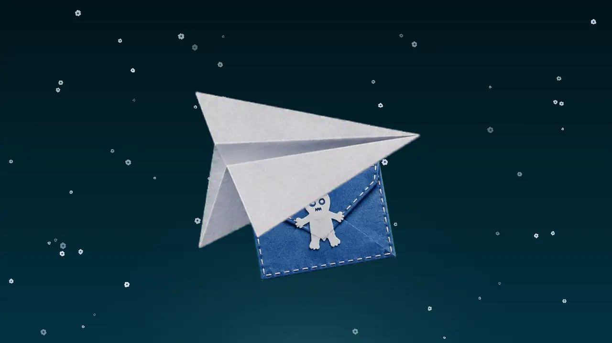
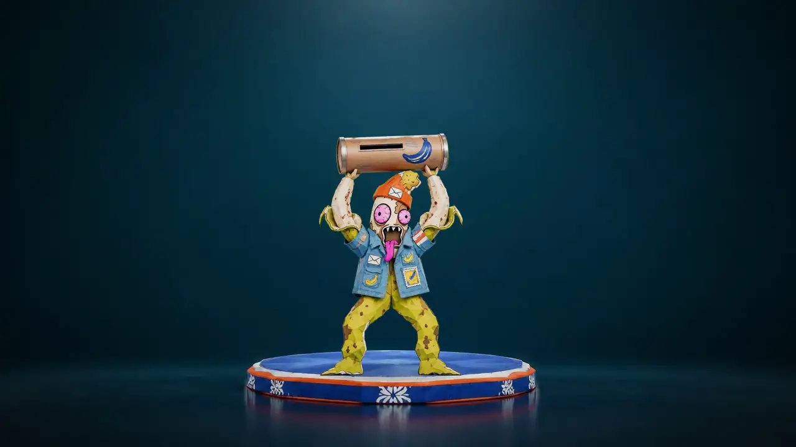

VenbeeMail Pro
Untuk developerFor developers
Kotak masuk uji lewat API.A test inbox over an API.
Buat alamat sekali pakai lewat API, kirim email dari aplikasi Anda ke sana, lalu ambil teks, HTML, dan lampirannya.Create a disposable address through the API, send your app’s email to it, then fetch the text, HTML, and attachments.
7 endpoint aktif4 domain emailTiap alamat punya masa berlaku7 live endpoints4 email domainsEvery address has an expiry
Dari pembuat BanaMail · oleh NongBanaFrom the maker of BanaMail · by NongBana
BAB 1 · PERJALANAN SURAT #001CHAPTER 1 · THE JOURNEY OF LETTER #001
Surat Sampai: perjalanan surat uji #001Delivered: the journey of test letter #001
Panggung menyala. Surat Uji #001 menunggu di podium.The stage lights up. Test Letter #001 waits on the podium. Pesawat kertas menyambar suratnya dan membawanya terbang.A paper plane swoops in and carries the letter off. Empat monyet mengoper surat. Yang cokelat nyaris menjatuhkannya.Four monkeys pass the letter along. The brown one almost drops it. 
Surat berguling di langit teal.The letter rolls across the teal sky. 
Menukik ke kotak surat yang diangkat maskot pisang.It dives toward the mailbox the banana mascot holds up. Masuk lewat celah. Sampai.In through the slot. Delivered.
SURAT UJI #001 · DITERIMATEST LETTER #001 · RECEIVED
BAB 2 · CARA PAKAINYACHAPTER 2 · HOW TO USE IT
Cara kerjaHow it works
Cara kerjaHow it works
Empat langkah, dari alamat baru sampai bersih lagiFour steps, from a fresh address to a clean slate
- Email verifikasi pendaftaranSign-up verification emails
- Tautan reset kata sandiPassword reset links
- Notifikasi berlampiranNotifications with attachments
-
Buat alamatCreate an address
Panggil
POST /api/addresses. Awalan dan domain boleh Anda tentukan, boleh juga dikosongkan.CallPOST /api/addresses. Set a prefix and a domain, or leave both out. -

Kirim email ujiSend a test email
Jalankan alur di aplikasi Anda dan arahkan emailnya ke alamat tadi.Run the flow in your app and point its email at that address.
-

Baca hasilnyaRead the result
GET /api/mailboxmenampilkan isi kotak.GET /api/messages/:idmemberi teks dan HTML satu email.GET /api/mailboxlists what arrived.GET /api/messages/:idreturns one email’s text and HTML. -
Hapus alamatDelete the address
DELETE /api/addresses/memenghapus alamat beserta semua isinya.DELETE /api/addresses/meremoves the address and everything in it.
DomainDomains
DomainDomains
Empat domain, satu APIFour domains, one API
Tulis nama domainnya di field domain saat membuat alamat.Pass the domain name in the domain field when you create an address.

TentangAbout
Di balik panggungBehind the stage
VenbeeMail Pro dibuat oleh NongBana, pembuat BanaMail.VenbeeMail Pro is made by NongBana, the maker of BanaMail.
BanaMail adalah layanan email sementara dari VenbeeMail. VenbeeMail Pro adalah versi untuk developer.BanaMail is VenbeeMail's temporary email service. VenbeeMail Pro is the version for developers.
Dibuat untuk developer dan penguji yang butuh alamat email sungguhan di dalam tes: pendaftaran akun, kode OTP, tautan verifikasi, dan lampiran.Made for developers and testers who need a real email address inside their tests: sign-ups, OTP codes, verification links and attachments.
[ISI CERITA ID][ISI CERITA EN]
- PembuatMaker
- NongBana
- Mulai dibuatStarted
- [ISI TAHUN]
- DariBased in
- [ISI KOTA], Indonesia
- KontakContact
- admin@venbeemail.com
- Layanan lainAlso by the maker
- BanaMail, email sementaraBanaMail, temporary email
[ISI FITUR CLAUDE ID][ISI FITUR CLAUDE EN]
Semua contoh di halaman ini ditandai "contoh". Halaman ini tidak memuat testimoni atau angka pengguna.Every sample on this page is marked "example". This page has no testimonials or user numbers.
Ada pertanyaan, laporan masalah, atau ide? Tulis ke admin@venbeemail.com.Questions, bug reports or ideas? Write to admin@venbeemail.com.
NongBana
[ISI KOTA] · [ISI TAHUN]